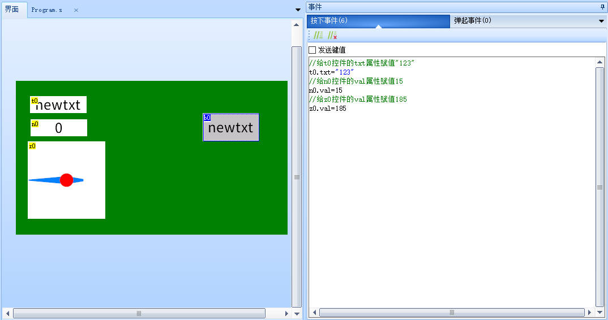
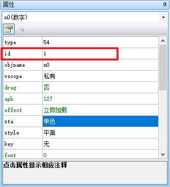
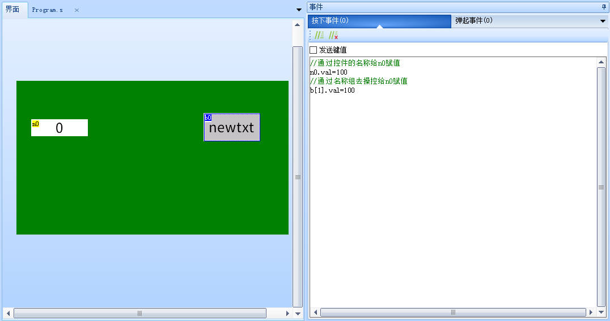
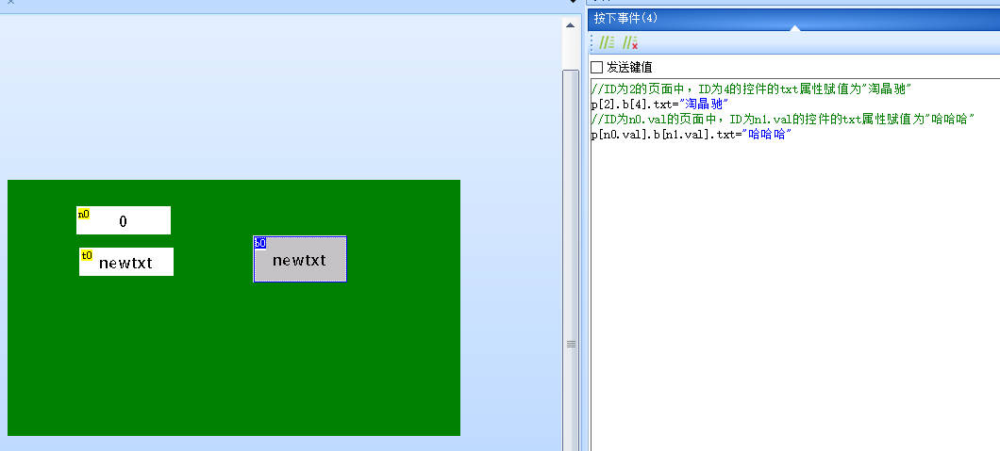
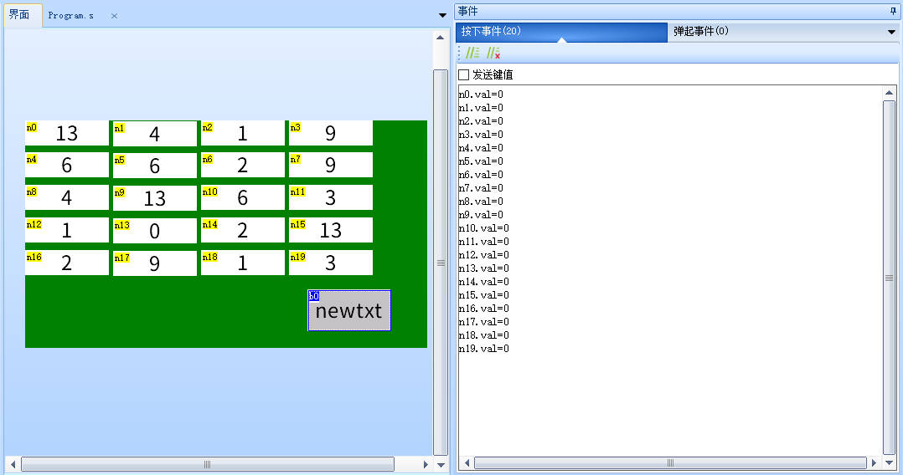
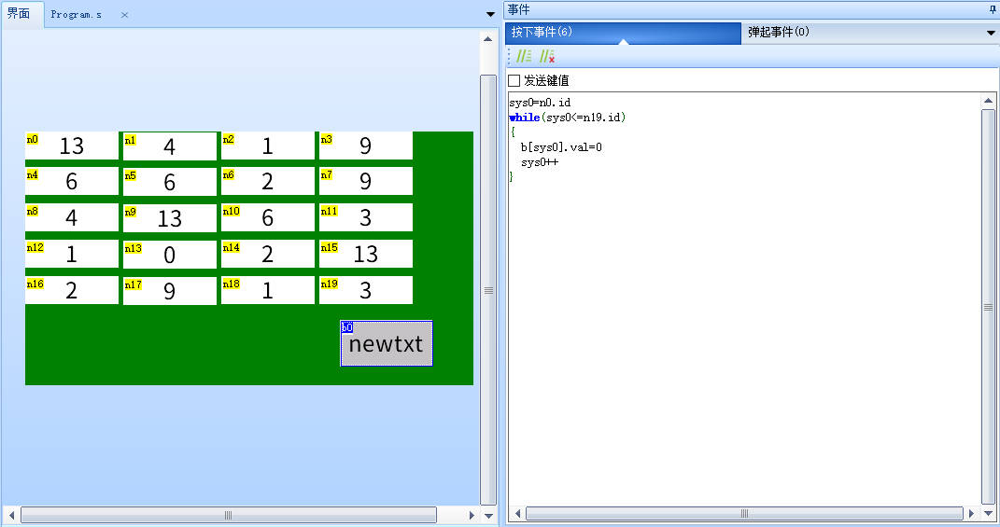
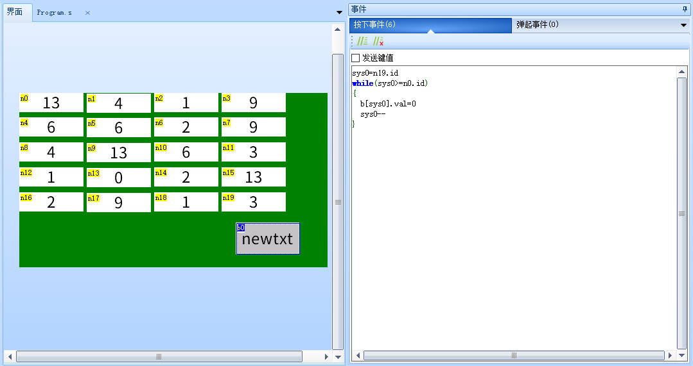
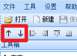

数组/名称组使用说明
什么是名称组,名称组和数组什么关系
名称组功能即创建一系列连续的控件来达到数组的效果
名称组的使用
大多数情况下，我们操作控件属性是这样的(这也是我们推荐的控件操作方式)：
//给t0控件的txt属性赋值"123"
t0.txt="123"
//给n0控件的val属性赋值15
n0.val=15
//给z0控件的val属性赋值185
z0.val=185

假如我们不知道控件名字，只知道控件ID怎么操作呢？这就需要名称组来实现
控件名称组格式: p[页面DP号].b[控件ID].属性
注意
这里的p是page（页面）的缩写，b是object（对象）的缩写，而不是指button（按钮），名称组访问控件，只有控件id的概念，没有控件类型的概念
注意
这里的p是page（页面）的缩写，b是object（对象）的缩写，而不是指button（按钮），名称组访问控件，只有控件id的概念，没有控件类型的概念
注意
这里的p是page（页面）的缩写，b是object（对象）的缩写，而不是指button（按钮），名称组访问控件，只有控件id的概念，没有控件类型的概念
注意
这里的p是page（页面）的缩写，b是object（对象）的缩写，而不是指button（按钮），名称组访问控件，只有控件id的概念，没有控件类型的概念
注意
这里的p是page（页面）的缩写，b是object（对象）的缩写，而不是指button（按钮），名称组访问控件，只有控件id的概念，没有控件类型的概念
例如我们知道了n0的id号是1

那么我们就可以使用以下两种方式来操作n0

页面名称组格式:p[页面DP号].b[控件ID号].属性
//ID为2的页面中，ID为4的控件的txt属性赋值为"淘晶驰"
p[2].b[4].txt="淘晶驰"
//ID为n0.val的页面中，ID为n1.val的控件的txt属性赋值为"哈哈哈"
p[n0.val].b[n1.val].txt="哈哈哈"

注意
必须确保此页面中的此控件具有对应的属性,否则赋值会失败,例如你不能给数值控件赋值txt属性,虽然能编译通过,但是实际赋值时会返回错误信息
怎么使用名称组
例如我们要创建一个长度为20的名称组,于是我们添加了20个数字控件,
有n0-n19共20个控件，如果要把他们全部初始化为0，第一种方法是逐个赋值为0。

第二种方法，使用名称组进行操作，代码如下
以下展示几种等价的写法：
等价写法一:
等价写法二:

等价写法三:

注意
当前演示的工程中,n0-n19的id号是连续且递增的，n0的id号最小，n19的id号最大
名称组应用-实现数组
示例：创建一个长度为20的数组
在page0页面新建20个数字控件，将所有变量控件设置为全局，这样才能跨页面访问
n0的id是1，n1的id是2，以此类推，n19的id是20
此时就可以通过名称组的方式来实现数组
代码示例：配合for语句批量将整个数组赋值为100
for(sys0=n0.id;sys0<=n19.id;sys0++)
{
page0.b[sys0].val=100
}
名称组常见操作方式
批量读取掉电存储空间数据
将掉电存储空间地址100开始连续的值加载到数值控件va0～va19，请确保va0～va19的id号是连续的
//设置掉电存储空间读取位置
sys1=100
//for循环读取掉电存储空间并赋值给数值控件
for(sys0=n0.id;sys0<=n19.id;sys0++)
{
//读取指定位置的掉电存储空间数据
repo b[sys0].val,sys1
//掉电存储空间读取地址加4，因为一个数值类型占用4byte空间。
sys1+=4
}
注意
必须确保所操纵的控件都具有对应的属性,否则可能会报错
批量隐藏控件n0～n99
请确保n0～n99的id号是连续的
//for循环读取掉电存储空间并赋值给数值控件
for(sys0=n0.id;sys0<=n99.id;sys0++)
{
vis b[sys0],0
}
批量清空文本控件t0～t5
请确保t0～t5的id号是连续的
for(sys0=t0.id;sys0<=t5.id;sys0++)
{
b[sys0].txt=""
}
批量将文本控件t0～t5赋值为“淘晶驰”
请确保t0～t5的id号是连续的
for(sys0=t0.id;sys0<=t5.id;sys0++)
{
b[sys0].txt="淘晶驰"
}
批量将数字控件n0～n5赋值为0
请确保n0～n5的id号是连续的
for(sys0=n0.id;sys0<=n5.id;sys0++)
{
b[sys0].val=0
}
所有控件的ID号软件自动分配，不可手动设置，用户在编辑UI界面时，按顺序依次放置的控件，软件将连续分配ID。
使用快捷栏的“置顶”、“置底”功能会使控件ID发生变化，因为图层的前后关系是跟控件ID关联的，ID最小的在最底层(所以页面ID是0),ID最大的在最上层，每个控件都有自己的图层，全部是通过ID来区别前后关系的。

注意
带有for的逻辑语句只能在上位编辑状态下写入控件的事件中，不支持串口传输逻辑语句。
名称组使用-样例工程下载
演示工程下载链接：